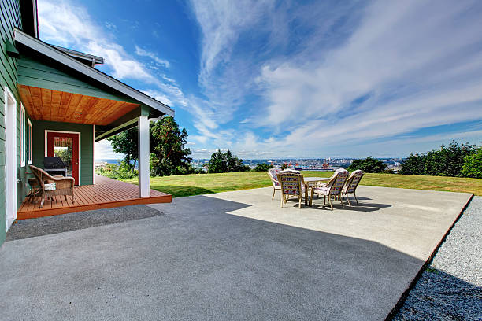

Lake Dunlap Texas
info@hudsonconcretecontractors.xyz
Lake Dunlap Texas
info@hudsonconcretecontractors.xyz

Professional concrete services in Lake Dunlap Texas delivering exceptional craftsmanship for residential and commercial needs. Quality materials and expert installation for driveways, patios, and more. Your satisfaction guaranteed.
Click Here To Call Us (877) 848-1711Looking for a reliable concrete company in Lake Dunlap Texas ? Our expert team specializes in delivering top-notch concrete solutions for residential, commercial, and industrial projects. Whether you're planning a new driveway, patio, or commercial foundation, we have the skills and experience to ensure your project is completed with the highest standards of quality and durability.
Why Choose Us for Your Concrete Needs in Lake Dunlap Texas ?
At Hudson Concrete Contractors, we pride ourselves on being the go-to concrete contractor in Lake Dunlap Texas . Our reputation is built on:
Experienced Professionals: Our team has years of experience in the concrete industry, ensuring precise and efficient workmanship.
High-Quality Materials: We use only the best materials, ensuring that your concrete structures are built to last.
Customized Solutions: Every project is unique, and we tailor our services to meet your specific needs and budget.
Timely Completion: We understand the importance of deadlines, and we strive to complete every project on time, without compromising on quality.
Our Concrete Services in Lake Dunlap Texas
We offer a wide range of concrete services, including:
Concrete Driveways: Durable and aesthetically pleasing driveways that stand the test of time.
Stamped Concrete: Add a decorative touch to your property with our custom stamped concrete designs.
Concrete Foundations: Strong and stable foundations for both residential and commercial properties.
Patios and Walkways: Beautiful outdoor spaces designed for comfort and style.
Concrete Repairs: Quick and reliable repairs to restore the integrity of your concrete surfaces.
Contact Us Today for a Free Estimate!
If you're in Lake Dunlap Texas and need professional concrete services, look no further. Contact us today to discuss your project and get a free, no-obligation estimate. Trust Hudson Concrete Contractors to bring your concrete vision to life!
Residential & commercial Hudson Concrete Contractors
Quality services at affordable prices
Immediate 24/ 7 emergency services

Cracks in concrete surfaces are a common concern for homeowners in Lake Dunlap Texas and understanding their causes is essential for effective prevention and repair. At Hudson Concrete Contractors, we are dedicated to helping you maintain your concrete surfaces in optimal condition.
Shrinkage During Curing
One of the primary causes of cracks is shrinkage during the curing process. As concrete sets and dries, it naturally contracts. If the curing process is too rapid or not properly managed, it can lead to surface cracks. Ensuring adequate curing time and methods can help mitigate this issue.
Temperature Fluctuations
Concrete is sensitive to temperature changes. Extreme heat or cold can cause the concrete to expand or contract, leading to cracks. Proper control of temperature during both the mixing and curing stages is crucial to prevent these types of issues.
Poor Mixing or Application
Improper mixing of concrete or incorrect application can result in a weak surface prone to cracking. Using the right mix ratios and ensuring proper application techniques are vital for a durable and crack-resistant surface.
Settlement and Soil Movement
Concrete surfaces can also crack due to settling or shifting of the underlying soil. If the ground beneath the concrete is unstable or poorly compacted, it can cause uneven settling, leading to cracks in the surface. Addressing soil issues before pouring concrete is essential for long-term stability.
Overloading and Structural Issues
Excessive weight or structural stress can cause concrete to crack. Ensuring that the concrete is designed and reinforced to handle the expected load is important to prevent such problems.
Preventive Measures and Repair
To prevent cracks, use proper construction techniques, maintain adequate curing conditions, and ensure proper site preparation. If cracks do appear, timely repair is essential to prevent further damage. At Hudson Concrete Contractors, we offer expert services to address and repair concrete cracks, ensuring the longevity and durability of your surfaces.
For reliable solutions to concrete issues in Lake Dunlap Texas contact Hudson Concrete Contractors today. We’re here to provide expert advice and quality service to keep your concrete surfaces in top shape.
Residential & commercial Hudson Concrete Contractors
Quality services at affordable prices
Immediate 24/ 7 emergency services
If you’re searching for trustworthy cement contractors near you, look no further than Hudson Concrete Contractors. We have built a strong reputation for providing top-quality cement services, tailored to meet your specific needs. Our team of experienced contractors has the expertise and tools to handle projects of any size effectively. We prioritize durability, efficiency, and excellent customer service at every step. With us, you can expect a seamless process from start to finish, ensuring your satisfaction with our cement solutions.

Quality doesn’t need to come at a high price. Our affordable concrete services are designed to provide quality solutions for all budgets. At Hudson Concrete Contractors, we aim to offer competitive pricing without sacrificing quality. Whether you need a simple slab installation or decorative concrete work, our team works diligently to provide value for your investment. We believe in open communication and transparency about pricing, so you’ll never have to worry about hidden fees. Choose us for affordable, high-quality concrete services that stand out.

Protecting your concrete surfaces is essential to extending their lifespan. Our concrete sealing services provide a protective barrier against moisture, stains, and damage. Our experienced technicians use high-quality sealants that enhance the durability and appearance of your concrete. Whether it’s for residential or commercial properties, we customize our sealing services to meet your specific needs. At Hudson Concrete Contractors, we understand the importance of maintaining your concrete, and we are here to offer expert advice and solutions for all your sealing needs.

Uneven concrete surfaces can pose safety risks and create aesthetic issues. Our concrete leveling services are the ideal solution for addressing sunken or displaced concrete slabs, including driveways, patios, and sidewalks. We utilize advanced techniques such as mudjacking and poly-jacking to raise and stabilize your concrete, restoring its level and function. Our expert team focuses on delivering quick and effective results, ensuring minimal disruption to your daily routine. Choose our concrete leveling services for a safer, more visually appealing solution to your uneven surfaces.

The foundation is the most crucial element of your structure, and its installation must be executed flawlessly. Our concrete foundation installation services in Lake Dunlap Texas are designed to provide you with a solid base for your home or commercial building. We pay close attention to the design, soil conditions, and building codes to ensure that each foundation is laid correctly and effectively. Our skilled contractors work diligently to bring your project to life, using high-quality concrete that meets or exceeds industry standards. Trust us for a foundation that stands the test of time.
If you want to enhance the aesthetic appeal of your concrete surfaces, our concrete staining services in Lake Dunlap Texas are the perfect solution. We offer a variety of colorful options to customize your concrete, providing a rich, vibrant appearance that mimics natural stone. Our skilled professionals use high-quality stains and techniques to achieve a seamless and beautiful finish for patios, floors, and more. Concrete staining is not only visually appealing but also adds a layer of protection to your surfaces. Trust us to transform your concrete into a stunning centerpiece of your property.

There are many concrete construction companies but we stand out by offering superior craftsmanship and comprehensive services. Whether you need decorative concrete, foundations, or resurfacing services, our experienced team has the expertise to deliver exceptional results. We are dedicated to maintaining open communication and transparency throughout the entire process, ensuring your vision becomes a reality. Choosing us means you receive the highest standards of quality without compromising on service.

For any concrete project, having the right mix is crucial. Our ready mix concrete delivery service ensures that you receive high-quality concrete tailored to your project specifications. We use state-of-the-art equipment to mix concrete to your desired specifications and deliver it promptly to your site. Our delivery team is professional and timely, guaranteeing that your concrete is fresh and ready for immediate use. Choose Hudson Concrete Contractors for reliable and efficient ready mix concrete solutions that support your construction needs.
Years Experience
Expert Technicians
Satisfied Clients
Compleate Projects
At Hudson Concrete Contractors, we understand that choosing the right concrete service provider is crucial for your project’s success. Serving Lake Dunlap Texas , we pride ourselves on delivering exceptional concrete solutions that meet your unique needs.
Why choose Hudson Concrete Contractors? Our team is committed to excellence in every project, whether it’s a residential driveway, a commercial foundation, or intricate decorative concrete. We combine years of experience with cutting-edge technology to ensure the highest quality results. Our skilled professionals are dedicated to delivering durable, aesthetically pleasing concrete that stands the test of time.
We prioritize customer satisfaction and transparency. From the initial consultation to project completion, we work closely with you to understand your vision and provide expert guidance. Our commitment to clear communication and timely service ensures that your project is completed on schedule and within budget. We use only premium materials and proven techniques to ensure the best possible outcome.
Hudson Concrete Contractors is renowned for its reliability and attention to detail. We take pride in our reputation for delivering outstanding concrete services throughout Lake Dunlap Texas . Our competitive pricing, combined with top-notch craftsmanship, makes us the preferred choice for all your concrete needs.
Experience the difference with Hudson Concrete Contractors. Contact us today to discuss your project and see why we’re the trusted name in concrete services across Lake Dunlap Texas . Let us turn your concrete vision into reality with professionalism and quality that exceeds expectations.
When it comes to finding reliable concrete contractors near you in Lake Dunlap Texas look no further! Our expert team specializes in delivering top-notch concrete solutions tailored to your specific needs. Whether you require residential or commercial concrete services, we have the skills and experience to handle any project, big or small. What sets us apart from others is our unwavering commitment to quality, customer satisfaction, and affordability. By choosing us, you’ll benefit from our extensive knowledge of local permits, codes, and regulations, ensuring a hassle-free experience from start to finish.
In today's world, ensuring your home has a solid foundation is key to its longevity and aesthetic appeal. Our residential concrete services in Lake Dunlap Texas encompass everything from driveways to patios and walkways. We pride ourselves on using the finest materials and techniques to provide durable, visually appealing surfaces that stand the test of time. Plus, our team will work closely with you to create custom designs that fit your vision and budget, making your home beautiful and functional.
The foundation of any successful commercial venture lies in solid concrete structures. At Hudson Concrete Contractors, our commercial concrete contractors possess the expertise and experience required to tackle projects of all sizes. From warehouses to retail spaces, our team delivers high-quality concrete solutions designed to meet the specific demands of your business. We prioritize safety, efficiency, and timely project completion, ensuring your commercial space is ready as scheduled. Choose us for your commercial concrete projects, and experience the reliability and professionalism that sets us apart in Lake Dunlap Texas .
A driveway is often the first impression visitors have of your home, which is why our concrete driveway installation services are designed with aesthetics and durability in mind. A professionally installed concrete driveway not only enhances curb appeal but also offers a long-lasting solution that withstands the test of time. Our team uses high-quality materials and advanced techniques to provide a flawless finish. Additionally, we ensure timely completion, minimal disruption, and excellent customer service, making us the best choice for your driveway needs.
Add value and beauty to your outdoor space with our expert concrete patio installation services. We offer a variety of styles, colors, and finishes to create the perfect patio that suits your lifestyle. Our team works diligently to ensure that every installation is seamless and enhances the overall aesthetic of your backyard. Whether you envision a simple outdoor space or a complex design, we are committed to delivering exceptional results tailored to your style. Choose us for concrete patio installation in Lake Dunlap Texas and let’s create an inviting space for you and your family to enjoy.
Stamped concrete is a stylish and cost-effective way to enhance your outdoor and indoor surfaces. Our stamped concrete services in Lake Dunlap Texas can replicate textures and patterns that resemble natural stone, brick, or even wood, allowing you to get the look you desire without the high cost. Our team is skilled in executing intricate designs that will elevate the aesthetic appeal of your property. Additionally, we ensure that the stamped surfaces are not only visually stunning but also durable and resistant to wear. Make your concrete surfaces a masterpiece by choosing our expert stamped concrete services.
A strong foundation is crucial for any structure. If you're noticing signs of foundation issues, you need reliable concrete foundation repair services. Our experts will evaluate your foundation and recommend the best solutions to restore its stability. We employ the latest techniques and technologies to ensure effective repairs that stand the test of time. At Hudson Concrete Contractors, we understand the complexities of foundation repair and are dedicated to providing top-notch service and support every step of the way. Invest in your property with our trusted foundation repair solutions.
The durability and flexibility of concrete slabs make them a popular choice for various applications, including basements, patios, and commercial floors. Our concrete slab installation services are designed to provide a solid and level surface that meets your needs. We work closely with you to determine the right thickness and reinforcement for your specific project, ensuring optimal performance over the long term. Our commitment to quality and customer satisfaction makes us the top choice for concrete slab installations.
If you’re looking to add a touch of elegance to your property, our decorative concrete services are the perfect solution. We offer a variety of options, from colored concrete and stamped surfaces to custom designs that reflect your style. Our team is passionate about helping you achieve the aesthetic you desire while ensuring that functionality and durability are never compromised. With our decorative concrete solutions, you can enhance patios, walkways, driveways, and more. Choose us to transform your spaces with beautiful, lasting concrete designs.
If your existing concrete surfaces are showing wear and tear, our concrete resurfacing services are the perfect solution. we specialize in rejuvenating old concrete to restore its functionality and appearance. Our resurfacing options provide a durable, new finish that can be customized to fit your design needs. We use high-quality materials and advanced techniques to ensure a smooth, long-lasting surface that can withstand heavy traffic. Trust our team to extend the life of your concrete with our dependable resurfacing services.
Concrete damage can occur over time due to various factors, including weather, wear, and poor installation. Our concrete repair contractors specialize in assessing and rectifying all types of concrete issues. From minor cracks to major structural repairs, we have the tools and expertise to restore your concrete surfaces effectively. By prioritizing quality and customer satisfaction, we ensure that your repairs are done right the first time, giving you lasting results.
Sidewalks are not only functional but also contribute to the overall aesthetic of your property. If you’re experiencing cracks, uneven surfaces, or other issues with your sidewalks, our sidewalk concrete repair services in Lake Dunlap Texas are here to help. Our team works quickly and efficiently to restore safety and functionality to your sidewalks, using high-quality materials and techniques for a durable finish. We understand the importance of curb appeal and safety in your community. Choose us for reliable and professional sidewalk repairs that make a difference.
Our concrete floor installation services in Lake Dunlap Texas are perfect for those seeking a durable and customizable flooring option. Whether it’s for residential or commercial spaces, concrete floors offer versatility, longevity, and easy maintenance. Our professional installers ensure that every inch of your project is handled with precision, ensuring a smooth and beautiful finish. By choosing us, you can rest assured knowing that we use high-quality materials and advanced methods for all installations.
When it’s time to make way for new concrete installations or renovations, our concrete removal services are here to help. We handle the complete removal process, ensuring that the project is conducted efficiently and safely. Our team is equipped with the right tools and expertise to remove concrete slabs, driveways, or any other existing structures without damaging the surrounding areas. We prioritize safety and cleanup, leaving your site ready for the next stage of your project. Choose us for hassle-free concrete removal that paves the way for your new designs.
Choosing local concrete companies offers several advantages, including quicker project turnaround and personalized service. Our company stands out among local concrete contractors in Lake Dunlap Texas for our commitment to quality, integrity, and customer satisfaction. We understand the specific needs of our community and tailor our services accordingly. By partnering with us, you’re not just getting a concrete contractor; you’re supporting a local business invested in your community.
Choosing the best concrete contractors is crucial for the success of your project. At Hudson Concrete Contractors, we are proud to be recognized as the best in Lake Dunlap Texas for our exceptional workmanship, attention to detail, and customer-first approach. Our team consists of skilled professionals who are passionate about delivering high-quality concrete solutions tailored to your needs. We employ the latest techniques and equipment to ensure every project is executed flawlessly, from start to finish. Experience the excellence that comes with choosing the best in the business.
Our concrete pouring services are perfect for both new constructions and renovation projects where a solid and durable foundation is necessary. Our skilled team ensures that all pouring is executed with precision, adhering to local regulations and industry best practices. We utilize high-quality concrete mixes and advanced equipment to deliver consistent results. By choosing us, you benefit from our reliability, experience, and dedication to achieving the best possible outcomes for your projects.
Ensuring the longevity and durability of concrete surfaces in Lake Dunlap Texas requires understanding the factors that impact their lifespan. At Hudson Concrete Contractors, we’re committed to delivering high-quality concrete solutions by addressing these key factors.
Quality of Materials
The durability of concrete starts with the quality of the materials used. High-quality cement, aggregates, and water are essential for a strong and long-lasting concrete mix. Using subpar materials can lead to weak concrete that deteriorates more quickly.
Proper Mixing and Application
The mixing ratio and application process significantly affect concrete durability. Accurate measurements and thorough mixing ensure the concrete achieves the desired strength and resistance. Additionally, proper application techniques, such as correct placement and finishing, are crucial for a smooth and resilient surface.
Curing Conditions
Curing is a critical phase in the concrete setting process. Adequate curing time and conditions help the concrete reach its full strength and durability. Rapid drying or improper curing can lead to surface cracks and weakened structural integrity.
Environmental Factors
Environmental conditions play a significant role in the lifespan of concrete. Extreme temperatures, moisture levels, and exposure to chemicals can impact concrete’s performance. Implementing protective measures, such as sealers and appropriate reinforcement, helps mitigate these environmental effects.
Load and Stress Management
Properly managing the load and stress placed on concrete is essential for its durability. Overloading or uneven stress can cause cracks and structural issues. Ensuring that concrete is designed and reinforced to handle expected loads prevents premature damage.
Maintenance Practices
Regular maintenance, including cleaning and sealing, helps protect concrete surfaces from damage and extends their lifespan. Addressing minor issues promptly can prevent them from developing into major problems.
For expert advice and high-quality concrete services in Lake Dunlap Texas Hudson Concrete Contractors is your trusted partner. Contact us today to ensure your concrete surfaces are built to last and maintain their durability for years to come.
Lake Dunlap is a census-designated place in Guadalupe County, Texas, United States. The population was 1,934 at the 2010 census. It is part of the San Antonio–New Braunfels metropolitan area.
Yes, we offer concrete resurfacing services to restore old, worn-out surfaces and make them look brand new.
The time frame depends on the project size, but most concrete projects by Hudson Concrete Contractors are completed within 3-7 days .
Yes, Hudson Concrete Contractors provides residential concrete services such as driveway, patio, and walkway installations in Lake Dunlap Texas .
Yes, we offer concrete demolition and removal services for old or damaged concrete .
Concrete is an excellent option for patios in Lake Dunlap Texas due to its durability, low maintenance, and customization options for color and texture.
Absolutely. Hudson Concrete Contractors has extensive experience managing large-scale commercial concrete projects in Lake Dunlap Texas .
Concrete is a sustainable material, especially when recycled. Hudson Concrete Contractors follows environmentally friendly practices .
Yes, we provide concrete sidewalk installation and repair services for residential and commercial properties in Lake Dunlap Texas .
Yes, we provide professional concrete repair services in Lake Dunlap Texas to fix cracks, spalling, and other damage.
Yes, we offer durable concrete retaining wall construction in Lake Dunlap Texas for both residential and commercial properties.
Yes, we use steel reinforcement (rebar or mesh) in concrete installations to increase strength and durability .
Concrete is low-maintenance but sealing every few years and occasional cleaning can help prolong its life. Hudson Concrete Contractors provides maintenance tips .
Proper site preparation, including grading and leveling, is crucial. Hudson Concrete Contractors handles all prep work to ensure a smooth, durable installation .
Yes, we specialize in stamped concrete services offering decorative options to mimic stone, brick, or tile.
Cement is a key ingredient in concrete. Concrete is a mixture of cement, sand, gravel, and water. Hudson Concrete Contractors uses high-quality concrete for all projects .
Concrete typically takes around 28 days to fully cure, but it can be walked on within 24-48 hours. Hudson Concrete Contractors advises waiting longer for heavy loads.
Hudson Concrete Contractors recommends high-strength, durable concrete mixes designed for heavy traffic and weather resistance for driveways .
Yes, we use special techniques and additives to pour concrete in cold weather conditions ensuring proper curing.
A properly installed concrete driveway by Hudson Concrete Contractors can last up to 30 years with proper maintenance in Lake Dunlap Texas .
Yes, we offer custom concrete design services, including decorative, stamped, and colored options to match your vision .
Hudson Concrete Contractors provides a range of services including driveways, patios, foundations, sidewalks, and decorative concrete installations.
Yes, Hudson Concrete Contractors provides expert concrete foundation installation for homes and commercial buildings .
Yes, Hudson Concrete Contractors is fully licensed and insured to provide professional and safe concrete services in Lake Dunlap Texas .
Yes, Hudson Concrete Contractors has the expertise and equipment to manage large commercial and residential concrete projects in Lake Dunlap Texas .
Yes, we offer a variety of colored concrete options to enhance the appearance of your patios, driveways, or walkways .
The best time to pour concrete in Lake Dunlap Texas is during mild weather conditions, typically in spring or fall, but we can work year-round.
Yes, we provide concrete leveling and repair services to fix uneven or sunken surfaces.
Yes, Hudson Concrete Contractors offers free, no-obligation estimates for all concrete projects .
The cost of concrete work depends on the project's size and complexity. Hudson Concrete Contractors offers competitive pricing and free estimates .
We recommend waiting at least 7 days before driving on a new concrete driveway installed by Hudson Concrete Contractors .
Hudson Concrete Contractors did a superb job on our concrete steps in Lake Dunlap Texas . They were prompt, professional, and the quality of work was exceptional. Highly recommended! — Kelly P.
Profession
Hudson Concrete Contractors provided excellent service for our driveway installation in Lake Dunlap Texas . They were knowledgeable, friendly, and delivered a high-quality finish. We couldn’t be happier with the results! — Jessica M.
Profession
Hudson Concrete Contractors did an exceptional job on our concrete steps in Lake Dunlap Texas . They were prompt, courteous, and the final product was exactly what we wanted. Very pleased! — Emily R.
Profession
Lake Dunlap TX Hudson Concrete Contractors Pros
(877) 848-1711
info@hudsonconcretecontractors.xyz
09.00 AM - 09.00 PM
09.00 AM - 12.00 PM